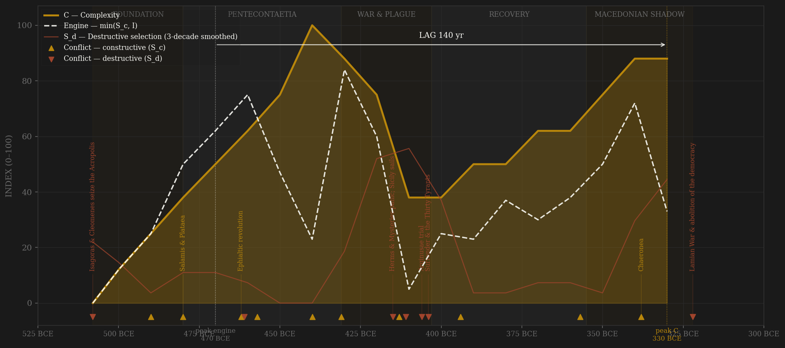
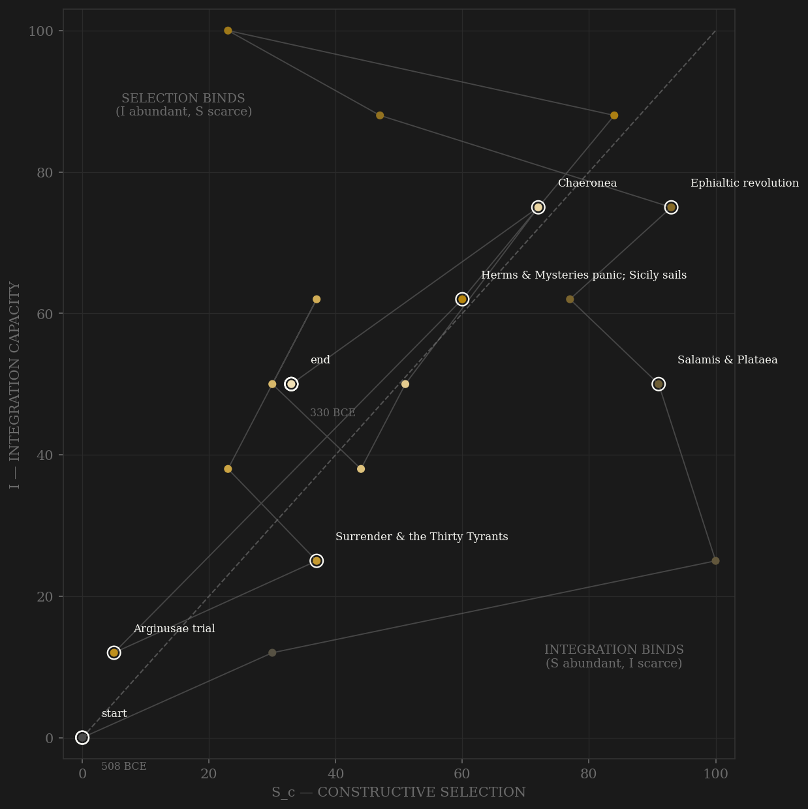

Athens is the contestability showcase because channel A is countable here as almost nowhere else in antiquity: ostracism is a complete, dated event list (487–416, opened by Hipparchus son of Charmus per Ath.Pol. 22.4, closed by the Hyperbolus collusion of 416), backed by ~11,600 published ostraka from the Kerameikos and Agora excavations; the liturgy system left an epigraphic corpus of competitive elite expenditure; the archon and strategos rosters survive year by year in Develin. The v2 engine peaks in the 470s–460s BCE — Eurymedon abroad, and at home the most radical decade of institutional opening ever compressed into ten years: Ephialtes strips the Areopagus (462), Cimon is ostracized through the machinery rather than killed by it, and by 457/6 the archonship opens to the third census class. Complexity's measured arc then answers twice, at nearly equal height: the Periclean peak of the 440s–430s (Parthenon, ~400 talents tribute plus a 6,000-talent reserve, drama at full didaskaliai) and, astonishingly, the Lycurgan peak of the 330s — largest fleet on the navy lists, ~1,200 talents a year, Lyceum and Academy both teaching — built AFTER Chaeronea, in the shadow of Macedon. The frozen protocol takes the terminal peak (+140, PASS); the interior Periclean peak gives +30 (PASS): the verdict is robust to the tie. The red line tells the other half: S_d spikes not with foreign war but with the machinery attacks — the herms panic and Alcibiades' condemnation (415), the Four Hundred (411), Arginusae (406, six victorious generals executed en bloc), and above all the Thirty (404–403), who killed ~1,500 without trial — more Athenians than the Peloponnesian fleet managed in most seasons.

The trajectory enters at the bottom-left — a new machine with everything to prove — and climbs both axes together through the Persian Wars, crossing into integration-binds territory as the Delian League turns rivalry into revenue. The Periclean plateau sits high on both axes; then the 410s drag the path violently down-left: plague, Sicily, the coups, the Thirty — selection turning destructive while integration (empire, walls, fleet) is amputated. What makes Athens singular in the sample is the SECOND loop: the restored democracy re-climbs the integration axis through the 370s league, Eubulus' finance, and the Lycurgan administration, so the trajectory ends high — the path is cut mid-flight in 322 by external decree, not by internal exhaustion. Rome pins against the S=0 wall; Athens dies at altitude, its contest machinery still adjudicating the Crown trial and convicting Demosthenes over Harpalus in its final decade.
Coded by locus and target, never by outcome. Athens is the cleanest laboratory for the rule: the Persian sacks of 480/479 burned the town but never touched the coordination machinery — the state had evacuated itself by decree and fought from the water, so Salamis is S_c (the Hannibal rule at maximum intensity) and the physical destruction loads on E. The Archidamian devastations and even Decelea stay S_c for the same reason: the walls held the locus outside the core. The coups invert it — 411 and 404 are S_d though barely a battle was fought, because the target was the assembly, the boule, the courts themselves. Arginusae (406) is the Yue Fei precedent two millennia early: the demos destroying its own victorious command by illegal collective trial. And ostracism — organized elite expulsion — scores as CONSTRUCTIVE contest in channels A and C: a vote with a ten-year sunset and no confiscation is competition within rules, the exact opposite of the Thirty's proscriptions.
| YEAR | CONFLICT | CODE | CODING RATIONALE |
|---|---|---|---|
| 508 BCE | Isagoras & Cleomenes seize the Acropolis | Sd | Spartan king intervenes to dissolve the new boule; the boule resists, the coup starves out in two days (Hdt. 5.72) — an attack on the machinery in its first year |
| 490 BCE | Marathon | Sc | Persia repelled at the frontier by the citizen levy — machinery untouched, external locus |
| 480 BCE | Salamis & Plataea | Sc | The state evacuates itself by decree and fights from the water — machinery functioning at maximum external pressure (Hannibal rule); the sacked town loads on E, not S_d |
| 462 BCE | Ephialtic revolution | Sc | Areopagus stripped by assembly vote against Cimon's opposition — the constitution remade within rules; the v2 engine peak decade |
| 461 BCE | Assassination of Ephialtes | Sd | Political murder of the reform's author (Ath.Pol. 25.4) — violence aimed at the reform machinery |
| 457 BCE | Tanagra & Oenophyta | Sc | First Peloponnesian War land contests — external peer rivalry |
| 440 BCE | Samian War | Sc | League policing — external locus; the machinery levies, sails, wins |
| 431 BCE | Archidamian War opens | Sc | Annual devastation of Attica; the walls hold the locus outside the coordination core |
| 415 BCE | Herms & Mysteries panic; Sicily sails | Sd | Mass denunciations and the condemnation of the fleet's own commander mid-campaign — the state attacking its own command; Alcibiades defects and points Sparta at Decelea |
| 413 BCE | Sicilian catastrophe & Decelea | Sc | Overreach lost abroad + countryside occupied — devastating, but external locus throughout; the losses load on E |
| 411 BCE | The Four Hundred | Sd | Assembly intimidated into voting itself out; Androcles and Phrynichus murdered — coup against the machinery, restored via the Five Thousand by 410 |
| 406 BCE | Arginusae trial | Sd | Six victorious strategoi executed en bloc by illegal collective vote — the demos destroys its own command (Yue Fei precedent) |
| 404 BCE | Surrender & the Thirty Tyrants | Sd | Walls demolished (core penetration, Adrianople rule); ~1,500 killed without trial, ~5,000 exiled (Isoc. 7.67, Aeschin. 3.235) — the machinery-attack showcase of the whole sample |
| 394 BCE | Corinthian War / Cnidus | Sc | Athens back in the peer contest; walls rebuilt 393 — external locus |
| 357 BCE | Social War | Sc | The league's own allies revolt and win independence — external contest lost, revenues halved; loads on E, machinery intact |
| 338 BCE | Chaeronea | Sc | The citizen levy loses in Boeotia; the machinery survives intact and runs the Lycurgan recovery immediately after — B by locus, the frontier rule |
| 322 BCE | Lamian War & abolition of the democracy | Sd | Crannon lost, then Antipater's garrison on Munychia, franchise cut to 9,000, 12,000+ struck off, Demosthenes and Hypereides hunted (Diod. 18.18) — terminal: the constitution itself is the target |
| COMPONENT | GRADE | BASIS |
|---|---|---|
| S_c — channel A, elite-entry (0.40) | ◐ event-counted + ○ intensity | Ostracism: complete canonical dated list 487–416 (Ath.Pol. 22, Rhodes commentary; ~10,500 Kerameikos + ~1,150 Agora ostraka — Brenne 2001, Lang Agora XXV). Liturgies: choregia/trierarchy corpus, liturgical class ~1,200, ~97 festival liturgies/yr (Davies APF; Ober Mass and Elite ch.5). Rosters: annual strategoi from 501/0, Pericles 443–429 (Develin, Athenian Officials). Sortition scope: lot for archons 487/6, zeugitai admitted 457/6, jury pay (Ath.Pol. 22.5, 26.2, 27.3). ◐ where counting these lists, ○ where judging intensity between anchors |
| S_c — channel B, peer rivalry (0.30 HARD CAP) | ○ scholar-coded | War-pressure ordinal from standard narratives, locus-cleaned: Persian Wars, Archidamian/Ionian wars while the walls held, 4th-c. contests, Chaeronea 338 (frontier rule). Core-penetration episodes excised to S_d: the 404 siege+surrender, the coups' foreign garrisons |
| S_c — channel C, within-rules contest (0.30) | ◐ event-anchored + ○ intensity | Ostracism double-scores here (a vote, not a purge); graphe paranomon from 415 as the institutional successor (Hansen ch.9); dated trial cycle — Miltiades 489, Pericles deposed/re-elected 430–429, Embassy 343, Crown 330, Harpalus 324. The 411/404 coups are S_d, not C — locus rule |
| S_d — Destructive | ◐ event-anchored | All dated: 508 Isagoras/Cleomenes, 461 Ephialtes assassinated, 415 herms panic, 411 Four Hundred, 406 Arginusae trial, 404–403 the Thirty (~1,500 killed without trial — Isoc. 7.67, Aeschin. 3.235 — ~5,000 exiled), 322 abolition. Persian sacks 480/479 carry residue only — machinery evacuated intact, destruction loads on E |
| Sc_v1_combat (frozen synthetic) | ○ scholar-coded | Channel B alone (external-war-only, the prior definition's operative content) — no v1 page ever existed for Athens; synthesized per the straight-to-v2 rule (Mughal/Gupta precedent) |
| I — Integration | ◐ epigraphic anchors + ○ between | Tribute: quota lists from 453 (IG I³ 259, AIO pulled 2026-07-06), 425/4 reassessment ~1,460 tal. nominal (IG I³ 71, AIO pulled), Aristides' 460 tal. (Thuc. 1.96), ~400 tal. + 6,000 reserve (Thuc. 2.13); Coinage Decree (IG I³ 1453, AIO pulled); Long Walls 458/7; Nikophon's coinage law 375/4 (RO 25, AIO pulled); Agyrrhius' grain-tax law 374/3 (RO 26, AIO pulled); Eubulus 130→~400 tal. (Dem. 10.37–38); Lycurgus ~1,200 tal./yr ([Plut.] Mor. 842F) |
| C — Complexity | ◐ counted anchors + ○ blend | Building program dates (Parthenon 447–432 … Lycurgan theater/stadium/arsenal); didaskaliai structure (tragedy from 508-era contests, comedy added 486, Lenaia ~440); fleet counts — 200 triremes 483 (Hdt. 7.144), 300 431 (Thuc. 2.13), 283 357/6 (IG II² 1611), ~360+ by 330–325 (IG II² 1627–29) per Gabrielsen 1994 (AIO pages for 1611/1604 returned HTTP 500 — coded from Gabrielsen, not fabricated); Laurion: 483 strike (Ath.Pol. 22.7), post-413 shutdown (Thuc. 7.27), 4th-c. lease boom (poletai records, Xen. Poroi) |
| E — Entropy | ◐ measured shocks + ○ intensity | Plague 430–426 ≥25% mortality (Thuc. 3.87: 4,400 hoplites + 300 cavalry from the ranks alone); Sicilian losses ~200 ships (Thuc. 7.87); ~20k slave defections shut Laurion (Thuc. 7.27); siege famine + emergency plated coinage 407–404; Social-War fiscal crisis (revenues 130 tal., Dem. 10.37); Lycurgan recovery 330s (E falls); grain crisis 330–326; 322 disenfranchisement of 12,000+ (Diod. 18.18) |
| R — Renewal (population) | ○ scholar-coded anchors | Total Attica in THOUSANDS (city-state convention, Venice precedent): Hansen 1991 ch.4 — 5th-c. peak ~300k (~60k adult male citizens), plague −25%+, 4th-c. recovery to ~250k (~30k citizens), 317 census 21k citizens + 10k metics (Ctesicles ap. Athenaeus). Straight-line interpolation between anchors |
19 decade rows (-508 off-decade founding row, then -500…-330; decade -D covers years D…D-9 BCE, so the Four Hundred sit in -420, the Thirty in -410, the abolition in -330) built by scripts/build_athens_sicre.py — a straight-to-v2 contestability build (AMENDMENT_S_definition_v2.md): Sc_constructive = 0.40 elite-entry (ostracism event list, liturgy corpus, Develin rosters, sortition-scope reforms — unusually COUNTABLE for antiquity) + 0.30 peer-polity rivalry (hard cap, locus-cleaned) + 0.30 within-rules political contest (ostracism double-scores; graphe paranomon from 415); Sc_v1_combat = channel B alone, synthesized per the Mughal/Gupta straight-to-v2 rule (no v1 page ever existed). Channel ledger: data/raw/athens/coding_ledger_v2.csv; audit: components_audit.csv; provenance incl. AIO/Topostext pulls with access dates: data/raw/athens/SOURCES.md. FROZEN-PROTOCOL LAG UNDER BOTH DEFINITIONS (3-decade centered rolling mean, engine=min(Sc,I)): v2 engine -470 (Ephialtic decade) → C -330 (Lycurgan) = +140 PASS; v1 engine -330 → C -330 = +0 SIMULTANEOUS — the v1 engine peak sits on the terminal Lamian-war decade, the combat contamination the amendment targets. SHORT-SERIES CAVEAT: 19 rows is the shortest series in the sample — one 3-decade smoothing window spans ~16% of the polity's life, so peak locations are coarse; UNSMOOTHED sensitivity: v2 engine -430 → C -440 = -10 SIMULTANEOUS; v1 engine -340 → C -440 = -100 FAIL. Additional edge-window caveat: under the frozen min_periods=1 smoothing the terminal row's 2-observation window lifts smoothed C at -330 (88.0) a hair above the interior Periclean peak at -440 (87.67); interior-window (full 3-obs) peaks give v2 engine -470 → C -440 = +30, still PASS — the v2 verdict is robust to the two-peak tie, and the tie itself is historical (Periclean vs Lycurgan complexity peaks of near-equal measured height), not a coding accident. Failed pulls acknowledged, not fabricated: AIO pages for navy lists IG II² 1611/1604 returned HTTP 500 twice — fleet counts coded from Gabrielsen 1994; per-decade ATL quota totals not re-keyed (tribute coded ◐ from the pulled 453/425 anchors + Thucydides). Rebuild: ~/grove/venv/bin/python ~/vitalic.stoicism/scripts/build_athens_sicre.py, then polity_report.py --slug athens